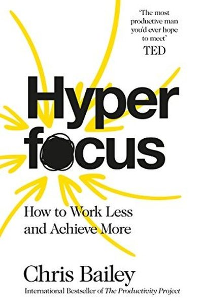

Library › Productivity
Hyperfocus — Summary & Key Lessons

How to manage your attention — the most important resource you own — from the author who spent a year on productivity experiments.
📖 OPEN THE FULL INTERACTIVE BREAKDOWN →🌐 Read it in Hindi, Hinglish, Gujarati, Tamil & 22 more languages — free, with audio.
💡 The Big Idea
After a year of intense self-experiments (tracking every hour, quitting social media, meditating daily), productivity author Chris Bailey concluded that attention is THE resource — more than time, because unfocused time is worthless. His framework: two modes you must master — hyperfocus (single-tasking on meaningful work, in four stages) and scatterfocus (deliberate mind-wandering that fuels creativity). Manage attention deliberately, and time takes care of itself.
🧠 The 5 Key Lessons
Lesson 1: Attention Is Your Most Valuable Currency
Why Attention Matters
Bailey's core argument: time is the same for everyone, but attention varies wildly — and output is a function of attention, not hours. An hour of deep attention produces more than five distracted hours. Attention is also finite: it drains through the day and can only hold a handful of 'slots' at once, which is why trying to do everything at once makes you good at nothing.
📖 Example: Bailey's year-long experiment showed his most productive days were never his busiest — they were days with few, high-attention tasks. His famous line: 'Working 8 hours with 50% attention is 4 hours of work — but feels like 8.' Read the full example →
⚡ Do this: For one week, log your attention honestly: rate each hour 0–100% focused. At the end, notice how much of your 'work time' was actually working.
Lesson 2: The Four Stages of Hyperfocus
Hyperfocus
Hyperfocus is single-tasking on one meaningful object of attention, and it unfolds in four stages: (1) choose a meaningful target, (2) eliminate as many external and internal distractions as possible, (3) focus on the target for as long as you can, (4) bring your attention back when it wanders — without judgment. The fourth stage is the one most people skip; wandering is normal, returning is the skill.
📖 Example: Bailey describes writing his book in 'hyperfocus sprints': phone in another room, browser closed, one chapter as the target — and when his mind drifted to email, he literally said 'not now' out loud and returned. Repetition built the muscle. Read the full example →
⚡ Do this: Pick tomorrow's one meaningful task. Set a 25-minute hyperfocus sprint: target chosen, distractions eliminated, and a sticky note that says 'return.'
Lesson 3: Kill the Attention Residue
Multitasking's Hidden Cost
Every time you switch tasks, part of your attention lingers on the previous task — 'attention residue' — and it taxes the next one. Research shows productivity drops up to 40% when switching frequently. Bailey's fix: batch similar tasks, close tabs and apps between projects, and use clear 'transition rituals' (a note of where you stopped) so your brain can let go.
📖 Example: Bailey cites the classic study: people who answered a quick email between two writing tasks produced worse writing than those who did them back-to-back. The email's residue followed them into the writing. Read the full example →
⚡ Do this: Try 'monotasking blocks' today: one app open, one task, no switches for 25 minutes. When you stop a task, write one line: 'Next: ___' to close the loop.
Lesson 4: Scatterfocus: The Creative Mode
Scatterfocus
The opposite of hyperfocus is not distraction — it's scatterfocus: deliberately letting your attention wander while keeping one eye on your goals. Bailey distinguishes three types: capture mode (wandering collects ideas worth writing down), problem-crunching mode (the mind keeps chewing on a hard problem in the background), and habitual mode (walking, showering — the classic incubation). Scatterfocus is where creativity lives.
📖 Example: Bailey got book ideas on long walks with no phone; the same mechanism explains shower epiphanies and the famous 'walk to work' breakthroughs of everyone from Newton to Steve Jobs (who walked meetings when stuck). Read the full example →
⚡ Do this: Schedule 20 minutes of device-free wandering today — walk, shower, stare out the window. Keep a notepad handy and capture whatever surfaces.
Lesson 5: Recharge Like a Battery
Managing Energy
Attention is a muscle: it fatigues with use and needs recovery. Bailey's research-backed recovery tools: sleep is non-negotiable (7–8 hours), take real breaks (walking beats scrolling — screens keep the attention engaged), and work in 'attention sprints' with gaps. Depleted attention makes everything feel harder — and makes you reach for the phone.
📖 Example: Bailey's experiment with walking breaks vs. social-media breaks showed a clear gap: after a walk, he returned focused; after scrolling, he returned scattered. The break's quality set the next sprint's quality. Read the full example →
⚡ Do this: Replace one daily scroll-break with a 10-minute walk or stretch. Notice the difference in your next work block.
✅ 5-Step Action Plan
- Log your attention honestly for a week — rate each hour's focus.
- Run one 25-minute hyperfocus sprint daily with a 'return' sticky note.
- Batch tasks and write a 'Next: ___' line when you stop anything.
- Schedule 20 minutes of device-free scatterfocus daily.
- Swap one scroll-break for a real break (walk, stretch, stare).
💬 Best Quotes from Hyperfocus
- “Your attention is the most important resource you possess.”
- “Multitasking is not a productivity strategy — it's an attention tax.”
- “The goal isn't to do more work — it's to do work that matters.”
Interactive version: mark lessons as read, listen in your language, share quote cards.